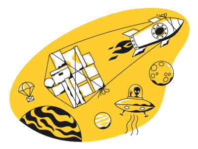

<div class="back-ground-main d-rtl">
  <div class="row w-100 h-100">
    <div class="col-5 back-ground-dark boxShadow">
      <app-input-style [inputId]="'userName'" [type]="'text'" [inputFormControl]="userNameControl" [inputLabel]="'نام کاربری'"></app-input-style>
    </div>
    <div class="col-7">
      <div class="title-login text-center set-font-Raymon">
        درباره ی سرویس بیشتر بدانید...
      </div>
      <div class="description-login set-font-vazir text-center col-11 col-sm-9 mx-auto">
        متنی ساختگی و بدون معنی است که برای امتحان فونت و یا پر کردن فضا در یک طراحی گرافیکی و یا صنعت چاپ استفاده میشود. طراحان وب و گرافیک از این متن برای پرکردن صفحه و ارائه شکل کلی طرح استفاده می‌کنند.
      </div>
      
    </div>
  </div>
</div>
